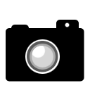
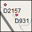

Sub-
stages | Western Interior Ammonite
Taxon Range Zones | Age
Ma |
|---|
| Maastrichtian: 70.6 +/- 0.6 to 65.5 +/- 0.3 |
| Upper | Jeletzkytes nebrascensis | |
| Hoploscaphites nicolletii | |
| Hoploscaphites birkelundae | |
| Lower |
| Baculites clinolobatus |


|
| 69.59 +/- 0.36 |
|
| 70.00 +/- 0.45 |
|
| |
| Campanian: 83.5 +/- 0.7 to 70.6 +/- 0.6 |
Upper
|
Baculites eliasi | 71.98 +/- 0.31 |
|
| |
|
| 72.94 +/- 0.45 |
|
| |
|
| 73.52 +/- 0.39 |
|
| 74.67 +/- 0.15 |
| Exiteloceras jennyi | 75.08 +/- 0.11 |
| Didymoceras stevensoni | |
|
| 75.19 +/- 0.28 |
| Middle |
| 75.56 +/- 0.11
75.84 +/- 0.26 |
| Baculites reduncas | |
| Baculites gregoryensis | |
|
| |
| Baculites sp.(smooth) | |
|
| |
| Baculites mcclearni | |
|
| 80.58 +/- 0.55 |
| Lower |
Baculites sp.week flank ribs | |
| Baculites sp.(smooth) | |
| Scaphites hippocrepis III | |
|
| 81.86 +/- 0.36 |
| Scaphites hippocrepis I | |
| Scaphites leei | |
| Santonian: 85.8 +/- 0.7 to 83.5 +/- 0.7 |
| Upper |
| 84.30 +/- 0.34 |
| Desmoscaphites erdmanni | |
| Clioscaphites choteauensis |
|
| |
| Middle |
| Clioscaphites vermiformis |
|
| |
| Lower |
| Clioscaphites saxitonianus |
|
| |
| Coniacian: 89.3 +/- 1.0 to 85.8 +/- 0.7 |
| Upper |
| 87.14 +/- 0.39 |
| Middle |
| |
| Lower | Scaphites preventricosus | |
| Turonian: 93.5 +/- 0.3 to 89.3 +/- 1.0 |
| Upper | Scaphites mariasensis | |
|
| |
| Scaphites nigricollensis | |
|
| |
| Middle |
| |
|
| |
| Prionocyclus macombi | 90.21 +/- 0.54 |
|
| 92.46 +/- 0.58 |
| Collignoniceras praecox | |
| Collignoniceras woollgari |
|
| |
| Lower | Mammites nodosoides | |
|
| 93.48 +/- 0.58 |
| Pseudaspidoceras flexuosum | 93.19 +/- 0.42 |
| Watinoceras devonense | |
| Cenomanian: 99.6 +/- 0.9 to 93.5 +/- 0.3 |
| Upper | Nigericeras scotti | |
|
| 93.83 +/- 0.38
93.19 +/- 0.42 |
| Burroceras clydense | |
| Euomphaloceras septemseriatum | 93.68 +/- 0.50 |
| Vascoceras diartianum | 93.99 +/- 0.72 |
|
| |
| Dunveganoceras albertense |
|
| |
| Dunveganoceras problematicum | |
|
| 94.71 +/- 0.49 |
| Middle |
| Plesiacanthoceras wyomingense |
|
|
|
|
| 94.96 +/- 0.50 |
| Acanthoceras bellense | |
|
| |
| Acanthoceras granerosense | |
| Conlinoceras tarrantense | 95.73 +/- 0.61 |